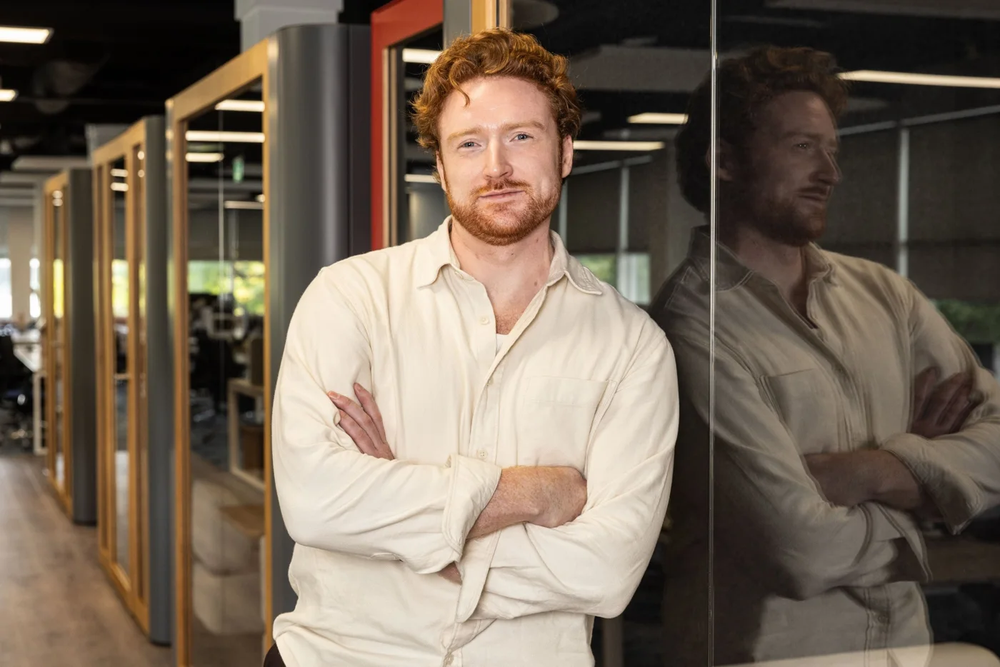

Graphic designer, DublinI find the idea
Scroll to see the work
Ergo becomes PresidioI find the idea
inside the constraint.
Scroll to see the workErgo becomes Presidio
Three brands, one acquisition, one brief that moved.
View case study →Stronger Together
Two companies in one room, neither allowed to win.
View case study →Ergo tri‑brand system
A colour wheel nobody could run day to day.
View case study →
I'm Darren.
I'm a graphic designer in Dublin. I've worked in-house since 2021, mostly on brand systems, campaigns and events. I'm now studying UX design and design systems, and I've completed the AI Fundamentals in UX Design certificate from the UX Institute.
darren.b.mcphail@gmail.com